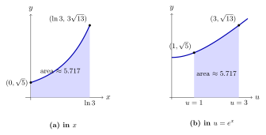
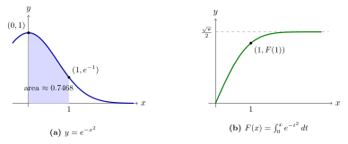

8.6 Integration Strategies¶
Guiding question
Sections 8.1 to 8.5 taught one method at a time, so the method was always announced by the title of the section. A real integral does not come with a title. This section is about the question that comes first: which method should I try? Differentiation is mechanical, because the rules of Calculus I always apply. Integration is a craft: the same integral can often be done in several ways, one of them is usually much shorter, and some integrals cannot be done in closed form at all. We give a decision procedure (Procedure 8.6.1), a table of patterns in the integrand, and a collection of examples that need a rewrite, a dead end and a fresh start, or two methods in a row. We prove the facts that make the craft safe: how to check an answer, why two correct answers may look different (Theorem 8.6.2), why a substitution can turn a root or an exponential into a rational function (Theorem 8.6.9), and how to recognize an integral with no elementary antiderivative (Theorems 8.6.16 and 8.6.17).
By the end of this section you should be able to:
-
apply the decision procedure: rewrite, test for a substitution, recognize the pattern, try the first steps of more than one method, and abandon a method that makes the integral worse;
-
combine two or three methods in sequence (a substitution followed by parts, parts followed by partial fractions, a substitution followed by a trigonometric substitution);
-
use a rationalizing substitution for \((ax+b)^{1/n}\) and for \(e^x\);
-
check every antiderivative by differentiating it, and say why a table or a computer algebra result is a claim and not a proof;
-
recognize integrals such as \(\int e^{-x^2}\,dx\) that have no elementary antiderivative, say what that statement means and what it does not mean, and give a numerical value or a bound for the corresponding definite integral.
A decision procedure¶
An integral is attacked in a fixed order of questions. The order is not a law of nature; it is a list of the cheapest things to try first.
Procedure 8.6.1: Choosing a method
-
Is it a basic formula? Compare with the table of Section 8.1 (formulas (1)–(17)). If a constant factor or a linear argument \(ax+b\) is the only difference, you are done.
-
Can it be rewritten? Split a fraction, divide polynomials, use an identity, complete the square, multiply by a conjugate or by \(1\) (Procedure 8.1.9). Rewriting costs nothing and often makes step 3 or 4 obvious.
-
Is there a substitution? Look for a function \(g(x)\) such that \(g'(x)\), up to a constant factor, is also in the integrand: the inside of a power, a root, an exponential or a trigonometric function; a denominator whose derivative is the numerator (Procedure 8.1.2).
-
Recognize the pattern (the table below) and use the method of the matching section: parts (8.2), trigonometric integrals (8.3), trigonometric substitutions (8.4), partial fractions (8.5).
-
Try the first steps of more than one method. Stop as soon as the new integral is no simpler: higher powers, more factors, a return to the start. A dead end is information, not failure.
-
Combine. After a substitution, parts or a division the new integrand is a new problem: start again at question 1.
-
If every route fails, ask whether an elementary antiderivative exists at all (Theorems 8.6.16 and 8.6.17); a definite integral can still be computed numerically.
-
Check. Differentiate an indefinite answer; compare a definite answer with a numerical value or a rough estimate of sign and size.
| Pattern in the integrand | First method | Section |
|---|---|---|
| \(f(g(x))\,g'(x)\) | substitution \(u=g(x)\) | 8.1 |
| polynomial \(\times\) \(e^{ax}\), \(\sin ax\), \(\cos ax\) | parts, \(u=\) the polynomial (repeat, or tabular) | 8.2 |
| \(\ln x\), \(\tan^{-1}x\), \(\sin^{-1}x\), polynomial \(\times\) one of them | parts, \(dv=\) the polynomial part | 8.2 |
| \(e^{ax}\sin bx\), \(e^{ax}\cos bx\) | parts twice and solve (cyclic) | 8.2 |
| \(\sin^mx\cos^nx\) | odd power: save one factor, substitute; even powers: identities | 8.3 |
| \(\tan^mx\sec^nx\), \(\cot^mx\csc^nx\) | \(u=\tan x\) or \(u=\sec x\) (or reduction formula) | 8.3 |
| \(\sqrt{a^2-x^2}\), \(\sqrt{a^2+x^2}\), \(\sqrt{x^2-a^2}\) | trigonometric substitution, unless a plain substitution works | 8.4 |
| \(ax^2+bx+c\) in a root or a denominator | complete the square | 8.1, 8.4 |
| rational function | divide if improper; substitution if the numerator is the derivative; else partial fractions | 8.5 |
| \((ax+b)^{1/n}\), or \(x\) only inside \(e^x\) | rationalizing substitution (Theorem 8.6.9) | this section |
Checking an answer, and why two answers can differ¶
Every method in this chapter produces a formula. Whether the formula is correct can be settled in one line, independently of how it was found.
Theorem 8.6.2: Checking and comparing antiderivatives
Let \(f\) be defined on an interval \(I\).
(1) A differentiable function \(F\) is an antiderivative of \(f\) on \(I\) if and only if \(F'(x)=f(x)\) for every \(x\) in \(I\). So any proposed answer, from any source, can be tested by differentiating it.
(2) If \(F\) and \(G\) are antiderivatives of \(f\) on \(I\), then \(F-G\) is constant on \(I\). Two correct answers obtained by different methods can therefore look different, but they differ by a constant.
Proof. (1) This is the definition of an antiderivative. (2) Put \(H=F-G\). Then \(H'=F'-G'=f-f=0\) on \(I\). Let \(p<q\) be two points of \(I\). By the Mean Value Theorem there is a number \(s\) between \(p\) and \(q\) with \(H(q)-H(p)=H'(s)(q-p)=0\). So \(H(q)=H(p)\) for all \(p,q\) in \(I\), and \(H\) is constant. ◻ ∎
Part (2) needs an interval. For \(\frac1x\), the function that equals \(\ln x+5\) for \(x>0\) and \(\ln(-x)-3\) for \(x<0\) is an antiderivative on \(x\ne0\), yet it is not \(\ln\lvert x\rvert\) plus one constant: the constant may change from one interval to the next. The usual “\(+C\)” means one constant for each interval on which the integrand is defined.
A table or a computer result is not a proof
A table of integrals, a computer algebra system or a classmate gives you a claim: “\(F\) is an antiderivative of \(f\)”. It becomes a proven fact only when you differentiate \(F\) and get \(f\) (Theorem 8.6.2(1)). Tables and programs may leave out absolute values, give a formula valid only on part of the domain, or write the answer in a form that differs from yours by a constant (Theorem 8.6.2(2)). In this course every integral in the examples is checked by differentiation, and a table or computer result is used only as a way to guess an \(F\) whose derivative we then compute.
Rewrite, substitute, recognize¶
Example 8.6.3: Rewrite the integrand
Evaluate \(\displaystyle\int\frac{1+\cos x}{\sin^2x}\,dx\).
Solution. Split the fraction and use \(\frac1{\sin x}=\csc x\) and \(\frac{\cos x}{\sin x}=\cot x\):
Both terms are in the table of Section 8.1 (formulas (6) and (8) with \(a=1\)), so on each interval on which \(\sin x\ne0\)
Check. \(\frac d{dx}(-\cot x-\csc x)=\csc^2x+\csc x\cot x\), which is the integrand by the split above.
Another form. By the half-angle identity \(\cot\frac x2=\frac{1+\cos x}{\sin x}=\csc x+\cot x\), the answer is also \(-\cot\frac x2+C\). The two forms are the same function, so by Theorem 8.6.2(2) the constant is \(0\).
A route that goes in a circle. If instead we write \(\sin^2x=(1-\cos x)(1+\cos x)\) and cancel, the integral becomes \(\int\frac{dx}{1-\cos x}\). This is correct, but it is not in our table. Multiplying top and bottom by \(1+\cos x\) to get rid of the denominator gives \(\frac{1+\cos x}{1-\cos^2x}=\frac{1+\cos x}{\sin^2x}\), the integral we started with. When a rewrite returns to the start, discard it and choose another.
Example 8.6.4: A substitution after a rewrite
Evaluate \(\displaystyle\int\frac{x^3}{\sqrt{25-x^8}}\,dx\) on \(\lvert x\rvert<\sqrt[4]5\).
Solution. The root contains \(25-x^8=25-(x^4)^2\), and the derivative of \(x^4\) is \(4x^3\), which is the numerator up to the factor \(4\). So rewrite the denominator and put \(u=x^4\), \(du=4x^3\,dx\), \(x^3\,dx=\frac14\,du\):
using formula (12) of Section 8.1 with \(a=5\). (A trigonometric substitution \(x^4=5\sin\theta\) would work too, but the plain substitution does the job in one step, as the table says.) Check. \(\frac d{dx}\frac14\sin^{-1}\frac{x^4}5=\frac14\cdot\frac1{\sqrt{1-x^8/25}}\cdot\frac{4x^3}5=\frac{x^3}{5\sqrt{(25-x^8)/25}}=\frac{x^3}{\sqrt{25-x^8}}\), because \(5\sqrt{\frac{25-x^8}{25}}=\sqrt{25-x^8}\).
Example 8.6.5: Identify the method, then finish
For each integral decide on a method from the pattern in the integrand, and evaluate it.
(a) \(\displaystyle\int\frac{5-3x^2}{x^3-5x}\,dx\). (b) \(\displaystyle\int\ln\left(4+x^2\right)dx\). (c) \(\displaystyle\int\sin^3x\cos^2x\,dx\).
Solution. (a) A rational function, but test the substitution first. The derivative of the denominator is \(3x^2-5\), and the numerator is \(5-3x^2=-(3x^2-5)\). Let \(u=x^3-5x\), \(du=(3x^2-5)\,dx\), so \((5-3x^2)\,dx=-du\):
Partial fractions (Section 8.5) would give the same function after factoring \(x^3-5x=x(x-\sqrt5)(x+\sqrt5)\): the three covered-up numerators are \(A=\frac5{-5}=-1\) at \(x=0\), and \(-1\) at each of \(x=\pm\sqrt5\) (check: \(\frac{5-15}{\sqrt5\cdot2\sqrt5}=-1\)), and \(-\ln\lvert x\rvert-\ln\lvert x-\sqrt5\rvert-\ln\lvert x+\sqrt5\rvert=-\ln\lvert x^3-5x\rvert\). Same answer, far more work.
(b) A single transcendental function with no polynomial factor: parts with \(dv=dx\) (Section 8.2, as for \(\ln x\)). Let \(u=\ln(4+x^2)\), \(dv=dx\), so \(du=\frac{2x}{4+x^2}\,dx\) and \(v=x\):
The new integrand is improper (equal degrees), so divide: \(2x^2=2(x^2+4)-8\), hence \(\frac{2x^2}{x^2+4}=2-\frac8{x^2+4}\), and \(\int\frac8{x^2+4}\,dx=8\cdot\frac12\tan^{-1}\frac x2=4\tan^{-1}\frac x2\) (formula (11), \(a=2\)). Therefore
(c) Powers of sine and cosine, odd power of sine (Section 8.3): save one factor \(\sin x\) and write \(\sin^2x=1-\cos^2x\). Let \(u=\cos x\), \(du=-\sin x\,dx\):
Check of (b) and (c). \(\frac d{dx}\left(x\ln(4+x^2)-2x+4\tan^{-1}\frac x2\right)=\ln(4+x^2)+\frac{2x^2}{4+x^2}-2+\frac{4\cdot\frac12}{1+x^2/4}=\ln(4+x^2)+\frac{2x^2}{4+x^2}-2+\frac8{4+x^2}=\ln(4+x^2)\), because \(\frac{2x^2+8}{4+x^2}=2\). And \(\frac d{dx}\left(-\frac{\cos^3x}3+\frac{\cos^5x}5\right)=\cos^2x\sin x-\cos^4x\sin x=\sin x\cos^2x(1-\cos^2x)=\sin^3x\cos^2x\).
Knowledge Check 8.6.1: Choose the first move
Name the first technique you would try for each integral (do not evaluate): (a) \(\displaystyle\int x^2e^{x^3}\,dx\); (b) \(\displaystyle\int xe^{3x}\,dx\); (c) \(\displaystyle\int\frac{x+1}{x^2+2x+5}\,dx\); (d) \(\displaystyle\int\frac{dx}{x^2\sqrt{x^2+9}}\).
Example 8.6.6: A dead end, and a fresh start
Evaluate \(\displaystyle\int x^5e^{x^3}\,dx\).
Solution. First attempt: parts. The integrand is a power of \(x\) times an exponential, a pattern that usually calls for parts. We cannot integrate \(e^{x^3}\), so take \(u=e^{x^3}\) and \(dv=x^5\,dx\): \(du=3x^2e^{x^3}dx\), \(v=\frac{x^6}6\). Then
The new integral has the power \(x^8\) in place of \(x^5\): it is worse, so we stop and return to the start.
Second attempt: substitution. The exponent \(x^3\) has derivative \(3x^2\), and \(x^5=x^3\cdot x^2\). Let \(u=x^3\), \(du=3x^2\,dx\), so \(x^2\,dx=\frac13\,du\):
Now parts is the right tool (Section 8.2): \(u=u\), \(dv=e^u\,du\) gives \(\int ue^u\,du=ue^u-\int e^u\,du=(u-1)e^u\). Therefore
Check. \(\frac d{dx}\left[\frac13(x^3-1)e^{x^3}\right]=\frac13\left[3x^2e^{x^3}+(x^3-1)\cdot3x^2e^{x^3}\right]=x^2e^{x^3}\left(1+x^3-1\right)=x^5e^{x^3}\).
Pause and think 8.6.1: Was the first attempt wrong?
In Example 8.6.6 the first attempt (parts) was not an error: the integral \(\int x^8e^{x^3}\,dx\) can also be done with \(u=x^3\). Why was it still the wrong start, and what could you look at, before integrating, to see this?
Answer and discussion
Parts helps when differentiating \(u\) and integrating \(dv\) make the integrand simpler. Here neither does: the derivative of \(e^{x^3}\) is \(3x^2e^{x^3}\), as complicated as before, and integrating \(x^5\) raises the power from \(x^5\) to \(x^6\), so the new integrand has \(x^8\). Before integrating, look for a function and its derivative: \(x^5e^{x^3}=x^3\,e^{x^3}\cdot x^2\) contains \(g=x^3\) and \(g'=3x^2\), so a substitution comes first, and only afterwards is the product \(ue^u\) handled by parts. The rule of thumb is to try substitution before parts whenever an inside function with its derivative is visible.
Example 8.6.7: Three methods in a row
Find the area under \(y=e^x\sqrt{4+e^{2x}}\) for \(0\le x\le\ln3\), that is, evaluate \(\displaystyle\int_0^{\ln3}e^x\sqrt{4+e^{2x}}\,dx\).
Solution. Substitution. The factor \(e^x\) is the derivative of the inside function \(e^x\), and \(e^{2x}=(e^x)^2\). Let \(u=e^x\), \(du=e^x\,dx\). The limits change: \(x=0\) gives \(u=1\) and \(x=\ln3\) gives \(u=3\). So the integral is \(\int_1^3\sqrt{4+u^2}\,du\) (the second picture of Figure 1).
Trigonometric substitution (Section 8.4). The root \(\sqrt{4+u^2}\) has the form \(\sqrt{a^2+u^2}\) with \(a=2\). Let \(u=2\tan\theta\), \(-\frac\pi2<\theta<\frac\pi2\), so \(du=2\sec^2\theta\,d\theta\) and \(\sqrt{4+u^2}=\sqrt{4\sec^2\theta}=2\sec\theta\) (because \(\sec\theta>0\) on this interval). Then
A reduction formula (Section 8.3). The secant reduction formula with \(n=3\) gives \(\int\sec^3\theta\,d\theta=\frac12\sec\theta\tan\theta+\frac12\int\sec\theta\,d\theta\), and \(\int\sec\theta\,d\theta=\ln\lvert\sec\theta+\tan\theta\rvert\) (Theorem 8.1.7). So
Back to \(u\) (Theorem 8.4.2): \(\tan\theta=\frac u2\) and \(\sec\theta=\frac{\sqrt{4+u^2}}2>0\). Then \(2\sec\theta\tan\theta=\frac{u\sqrt{4+u^2}}2\) and \(2\ln(\sec\theta+\tan\theta)=2\ln\frac{u+\sqrt{4+u^2}}2=2\ln\left(u+\sqrt{4+u^2}\right)-2\ln2\); the constant \(-2\ln2\) is absorbed into \(C\). So an antiderivative is
Check. \(\frac{d}{du}\ln\left(u+\sqrt{4+u^2}\right)=\frac{1+u/\sqrt{4+u^2}}{u+\sqrt{4+u^2}}=\frac{1}{\sqrt{4+u^2}}\), so \(F'(u)=\frac12\sqrt{4+u^2}+\frac{u^2}{2\sqrt{4+u^2}}+\frac2{\sqrt{4+u^2}}=\frac{(4+u^2)+u^2+4}{2\sqrt{4+u^2}}=\frac{4+u^2}{\sqrt{4+u^2}}=\sqrt{4+u^2}\).
Evaluate. \(F(3)=\frac{3\sqrt{13}}2+2\ln\left(3+\sqrt{13}\right)\) and \(F(1)=\frac{\sqrt5}2+2\ln\left(1+\sqrt5\right)\), so
Check by a numerical value. A numerical evaluation of the original integral gives \(5.71740\), in agreement. The picture shows why the answer is believable: the region has height from \(\sqrt5\approx2.24\) to \(3\sqrt{13}\approx10.8\) over a base of length \(\ln3\approx1.10\), so the area lies between \(2.24\cdot1.10\approx2.5\) and \(10.8\cdot1.10\approx11.9\).

Figure 1. (a) The region under \(y=e^x\sqrt{4+e^{2x}}\) for \(0\le x\le\ln3\). (b) After the substitution \(u=e^x\) the same area is the area under \(y=\sqrt{4+u^2}\) for \(1\le u\le3\). The shapes differ (note the different vertical scales: \(0.3\) cm per unit in (a), \(0.9\) cm per unit in (b)), but both regions have area \(\frac{3\sqrt{13}-\sqrt5}2+2\ln\frac{3+\sqrt{13}}{1+\sqrt5}\approx5.717\).
Example 8.6.8: Parts, then division, then partial fractions
Evaluate \(\displaystyle\int\ln\left(x^2+x-6\right)dx\) on \(x>2\) (the integrand is defined where \(x^2+x-6=(x-2)(x+3)>0\), that is, for \(x>2\) and for \(x<-3\)).
Solution. Parts (as for \(\ln x\)): \(u=\ln(x^2+x-6)\), \(dv=dx\), so \(du=\frac{2x+1}{x^2+x-6}\,dx\) and \(v=x\):
Division (the numerator \(2x^2+x\) has the same degree as the denominator): \(2x^2+x=2(x^2+x-6)+(12-x)\), so \(\frac{2x^2+x}{x^2+x-6}=2+\frac{12-x}{(x-2)(x+3)}\).
Partial fractions (Section 8.5): \(\frac{12-x}{(x-2)(x+3)}=\frac A{x-2}+\frac B{x+3}\) with \(A=\frac{12-2}{2+3}=2\) (cover up \(x-2\) at \(x=2\)) and \(B=\frac{12+3}{-3-2}=-3\) (at \(x=-3\)). Check at \(x=0\): \(\frac{12}{-6}=-2\) and \(\frac2{-2}+\frac{-3}3=-1-1=-2\). So
and therefore
Check. The derivative is \(\ln(x^2+x-6)+\frac{x(2x+1)}{x^2+x-6}-2-\frac2{x-2}+\frac3{x+3}\), and \(\frac{x(2x+1)}{x^2+x-6}-2=\frac{12-x}{(x-2)(x+3)}=\frac2{x-2}-\frac3{x+3}\) cancels the last two terms. (For \(x<-3\) the same formula holds with \(\ln\lvert x-2\rvert\) and \(\ln\lvert x+3\rvert\).)
Making an integrand rational¶
A substitution that is not suggested by an inside function can still be the right idea when it removes a root or an exponential. After the substitution the integrand is a rational function, and Section 8.5 finishes the job.
Theorem 8.6.9: Rationalizing substitutions
Let \(R(p,q)\) be a rational function of two variables.
(1) Let \(n\ge2\) be an integer, \(a\ne0\), and let \(I\) be an open interval on which \(ax+b>0\) (and on which the integrand is continuous). With \(u=(ax+b)^{1/n}\),
and the integrand on the right is a rational function of \(u\).
(2) With \(u=e^x\), \(\displaystyle\int R(e^x)\,dx=\left[\int\frac{R(u)}u\,du\right]_{u=e^x}\), and the integrand on the right is a rational function of \(u\).
Proof. We use Theorem 8.4.3: if \(g\) is a differentiable one-to-one function from an open interval \(J\) onto an open interval \(I\) with \(g'\ne0\), and \(f\) is continuous on \(I\), then \(\int f(x)\,dx=\left[\int f(g(\theta))g'(\theta)\,d\theta\right]_{\theta=g^{-1}(x)}\).
(1) Put \(g(u)=\frac{u^n-b}a\) on \((0,\infty)\). Then \(g'(u)=\frac na\,u^{n-1}\ne0\) for \(u>0\), so \(g\) is strictly monotone (hence one-to-one) and continuous; its image is the open interval \(\{x:ax+b>0\}\), and \(g^{-1}(x)=(ax+b)^{1/n}\), because \(u^n=ax+b\) and \(u>0\). Take \(J=g^{-1}(I)\). For \(f(x)=R\left(x,(ax+b)^{1/n}\right)\) we get \(f(g(u))=R\left(g(u),(u^n)^{1/n}\right)=R\left(\frac{u^n-b}a,u\right)\) since \(u>0\). The theorem gives the formula; the integrand \(R\left(\frac{u^n-b}a,u\right)\frac na u^{n-1}\) is a rational function of \(u\) because \(R\) is rational and the other factors are polynomials.
(2) Put \(g(u)=\ln u\) on \((0,\infty)\): it is differentiable, one-to-one, onto \((-\infty,\infty)\), with \(g'(u)=\frac1u\ne0\) and \(g^{-1}(x)=e^x\). Here \(f(x)=R(e^x)\), so \(f(g(u))=R(e^{\ln u})=R(u)\), and the theorem gives \(\int R(e^x)\,dx=\left[\int R(u)\frac1u\,du\right]_{u=e^x}\). ◻ ∎
Example 8.6.10: A root removed by a substitution
Evaluate \(\displaystyle\int\frac{x}{2+\sqrt{x+1}}\,dx\) on \(x>-1\).
Solution. The only root is \(\sqrt{x+1}\), so let \(u=\sqrt{x+1}\) (Theorem 8.6.9(1) with \(n=2\), \(a=1\), \(b=1\)). Then \(x=u^2-1\), \(dx=2u\,du\), and
The integrand is an improper rational function, so divide: \(u^3-u=(u+2)(u^2-2u+3)-6\) (check: \((u+2)(u^2-2u+3)=u^3-2u^2+3u+2u^2-4u+6=u^3-u+6\)). Hence \(\frac{u^3-u}{u+2}=u^2-2u+3-\frac6{u+2}\) and
Return to \(x\) with \(u=\sqrt{x+1}\), \(u^2=x+1\), \(u^3=(x+1)^{3/2}\):
Check. With \(u=\sqrt{x+1}\) we have \(\frac{du}{dx}=\frac1{2u}\), so by the Chain Rule the derivative of the answer is \(\frac1{2u}\left(2u^2-4u+6-\frac{12}{u+2}\right)\). Over a common denominator, \(2u^2-4u+6-\frac{12}{u+2}=\frac{(2u^2-4u+6)(u+2)-12}{u+2}=\frac{2u^3-2u}{u+2}\), so the derivative is \(\frac1{2u}\cdot\frac{2u(u^2-1)}{u+2}=\frac{u^2-1}{u+2}=\frac{x}{2+\sqrt{x+1}}\), the integrand.
Knowledge Check 8.6.2: Which substitution?
Find a substitution that turns each integral into one of rational type (do not evaluate): (a) \(\displaystyle\int\frac{dx}{1+\sqrt{3x+2}}\); (b) \(\displaystyle\int\frac{e^{2x}}{e^x+1}\,dx\); (c) \(\displaystyle\int\frac{\sqrt x}{1+\sqrt[3]x}\,dx\).
Patterns: roots, rational functions, definite integrals¶
Example 8.6.11: Do not overlook a simpler solution
Evaluate \(\displaystyle\int\frac{x^3}{\sqrt{4-x^2}}\,dx\) on \(\lvert x\rvert<2\) in two ways.
Solution. Route A: substitution. The root contains \(4-x^2\), whose derivative \(-2x\) shares a factor \(x\) with the numerator. Write \(x^3\,dx=x^2\cdot x\,dx\) and let \(u=4-x^2\), so \(x^2=4-u\) and \(x\,dx=-\frac12\,du\):
So the integral is \(-4\sqrt{4-x^2}+\frac13(4-x^2)^{3/2}+C\).
Route B: trigonometric substitution. The pattern \(\sqrt{a^2-x^2}\) with \(a=2\) suggests \(x=2\sin\theta\), \(dx=2\cos\theta\,d\theta\), \(\sqrt{4-x^2}=2\cos\theta\) (as \(\cos\theta>0\) for \(-\frac\pi2<\theta<\frac\pi2\)). Then \(\frac{x^3\,dx}{\sqrt{4-x^2}}=\frac{8\sin^3\theta\cdot2\cos\theta\,d\theta}{2\cos\theta}=8\sin^3\theta\,d\theta\). This is an odd power of sine (Section 8.3): \(8\int(1-\cos^2\theta)\sin\theta\,d\theta=8\left(-\cos\theta+\frac{\cos^3\theta}3\right)\). With \(\cos\theta=\frac{\sqrt{4-x^2}}2\) (Theorem 8.4.2) this is \(-4\sqrt{4-x^2}+\frac83\cdot\frac{(4-x^2)^{3/2}}8\), which is the same function as in Route A.
Both routes are correct; Route A is shorter because it uses no inverse function and no second technique. The pattern \(\sqrt{a^2-x^2}\) “suggests” a trigonometric substitution, but an odd power of \(x\) outside the root is the signal to look for \(u=a^2-x^2\) first.
Example 8.6.12: A rational function: test, then decompose
Evaluate \(\displaystyle\int\frac{5x^2-x+7}{(x-1)(x^2+4)}\,dx\).
Solution. Tests first. The fraction is proper (degree \(2<3\)). The derivative of the denominator \(x^3-x^2+4x-4\) is \(3x^2-2x+4\), which is not a constant multiple of the numerator, so a substitution \(u=\) denominator fails. The factor \(x^2+4\) is irreducible (\(0-16<0\)), so partial fractions:
Cover up \(x-1\) at \(x=1\): \(A=\frac{5-1+7}{1+4}=\frac{11}5\). Compare the \(x^2\) coefficients: \(5=A+B\), so \(B=\frac{14}5\). Compare the constants: \(7=4A-C=\frac{44}5-C\), so \(C=\frac95\). Check the coefficient of \(x\): \(-1=C-B=\frac95-\frac{14}5=-1\). Now split the quadratic piece into a logarithm part and an inverse tangent part:
and \(\int\frac{dx}{x^2+4}=\frac12\tan^{-1}\frac x2\) (formula (11) with \(a=2\)). Therefore
Check. Differentiate term by term. \(\frac d{dx}\frac{11}5\ln\lvert x-1\rvert=\frac{11/5}{x-1}\); \(\frac d{dx}\frac75\ln(x^2+4)=\frac{14x/5}{x^2+4}\); and by the Chain Rule \(\frac d{dx}\frac9{10}\tan^{-1}\frac x2=\frac9{10}\cdot\frac{1/2}{1+x^2/4}=\frac{9/5}{x^2+4}\). The sum is \(\frac{11/5}{x-1}+\frac{14x+9}{5(x^2+4)}\), the decomposition found above, which adds up to the integrand.
Example 8.6.13: A definite integral: substitution, then parts
Evaluate \(\displaystyle\int_0^{\pi^2/4}\sin\sqrt x\,dx\).
Solution. The only appearance of \(x\) is inside the root, but \(\frac{du}{dx}=\frac1{2\sqrt x}\) is not in the integrand. Instead solve for \(x\): let \(u=\sqrt x\), so \(x=u^2\) and \(dx=2u\,du\) (the idea of Theorem 8.6.9, with an integrand that is not rational). The limits change: \(x=0\) gives \(u=0\) and \(x=\frac{\pi^2}4\) gives \(u=\frac\pi2\). Then
This is a polynomial times a sine, so use parts: \(p=2u\), \(dv=\sin u\,du\), so \(dp=2\,du\) and \(v=-\cos u\) (the letter \(p\) avoids a clash with the substitution variable):
Check. Going back to \(x\) (not to \(u\)): an antiderivative is \(-2\sqrt x\cos\sqrt x+2\sin\sqrt x\). With \(\frac d{dx}\sqrt x=\frac1{2\sqrt x}\) and the Chain Rule, \(\frac d{dx}\left(-2\sqrt x\cos\sqrt x\right)=-\frac{\cos\sqrt x}{\sqrt x}+\sin\sqrt x\) and \(\frac d{dx}\left(2\sin\sqrt x\right)=\frac{\cos\sqrt x}{\sqrt x}\), so the sum is \(\sin\sqrt x\). At the limits: \(-2\cdot\frac\pi2\cdot0+2\cdot1-(0+0)=2\).
![Diagram: $\frac{\pi^2; area \(2\); (a) \(\sin\sqrt x\) on $\left0,\frac{\pi^2; \(\frac\pi2\); area \(2\); (b) \(2u\sin u\) on \(\left[0,\frac\pi2\right]\)
![0,\frac{\pi^2; \(\frac\pi2\); area \(2\); (b) \(2u\sin u\) on \(\left[0,\frac\pi2\right]\)](../figures/notes-fig2.svg){kind=link}
Figure 2. (a) The region under \(y=\sin\sqrt x\) for \(0\le x\le\frac{\pi^2}4\). (b) The region under \(y=2u\sin u\) for \(0\le u\le\frac\pi2\) after the substitution \(x=u^2\). The regions have different shapes and different vertical scales (\(1.9\) cm per unit in (a), \(0.95\) cm per unit in (b)), but the same area, \(2\).
Example 8.6.14: A challenging rewrite
Evaluate \(\displaystyle\int\frac{\sin x}{\sin x+\cos x}\,dx\) on an interval where \(\sin x+\cos x\ne0\).
Solution. Nothing in the table fits, no identity simplifies the quotient, and a substitution \(u=\sin x+\cos x\) needs \(du=(\cos x-\sin x)\,dx\), which is not the numerator. But the denominator and its derivative are related to the numerator: with \(s=\sin x\) and \(c=\cos x\) we have \(2s=(s+c)+(s-c)\), so
In the last fraction the numerator is minus the derivative of the denominator. Let \(u=\sin x+\cos x\), \(du=(\cos x-\sin x)\,dx\), so \((\sin x-\cos x)\,dx=-du\):
Check. \(\frac d{dx}\left[\frac x2-\frac12\ln\lvert\sin x+\cos x\rvert\right]=\frac12-\frac12\cdot\frac{\cos x-\sin x}{\sin x+\cos x}=\frac{(\sin x+\cos x)-(\cos x-\sin x)}{2(\sin x+\cos x)}=\frac{2\sin x}{2(\sin x+\cos x)}=\frac{\sin x}{\sin x+\cos x}\). A definite integral. On \(\left[0,\frac\pi2\right]\) we have \(\sin x+\cos x\ge1>0\), and \(\sin 0+\cos0=1=\sin\frac\pi2+\cos\frac\pi2\), so the logarithm terms cancel and \(\int_0^{\pi/2}\frac{\sin x}{\sin x+\cos x}\,dx=\frac\pi4\). (Example 8.6.33 explains this value by symmetry.)
Pause and think 8.6.2: Two answers
Evaluate \(\int\sin x\cos x\,dx\) with \(u=\sin x\) and again with \(u=\cos x\). The two answers look different. Are they both right? What exactly is the relation between them?
Answer and discussion
With \(u=\sin x\): \(\int\sin x\cos x\,dx=\frac{\sin^2x}2+C\). With \(u=\cos x\), \(du=-\sin x\,dx\): \(-\int u\,du=-\frac{\cos^2x}2+C\). Both are antiderivatives of \(\sin x\cos x\) on all of \(\mathbb R\), and they are not equal as functions; their difference is \(\frac{\sin^2x}2-\left(-\frac{\cos^2x}2\right)=\frac{\sin^2x+\cos^2x}2=\frac12\), a constant, exactly as Theorem 8.6.2(2) says. (A third form, \(-\frac14\cos2x\), differs from the first by \(\frac14\).)
Integrals with no elementary antiderivative¶
Some integrals resist every method of this chapter, and that is not because we are not clever enough. First we must be clear about what is claimed.
Definition 8.6.15: Elementary function
A function is elementary if it can be built from constants and the function \(x\) by finitely many sums, differences, products, quotients and compositions, and by taking roots, exponentials, logarithms, sines, cosines and their inverse functions. These are the functions that a scientific calculator can compute from its keys.
Every antiderivative found in Sections 8.1 to 8.5 is elementary. But the statement “\(\int e^{-x^2}\,dx\) is not elementary” does not say that the integral does not exist. The function \(e^{-x^2}\) is continuous, so by the Fundamental Theorem of Calculus the function \(F(x)=\int_0^xe^{-t^2}\,dt\) is differentiable with \(F'(x)=e^{-x^2}\): it is an antiderivative. The point is that \(F\) cannot be written with the functions of the definition. It is an honest new function, defined by an area; it is called the error function (up to a constant factor, \(\operatorname{erf}x=\frac2{\sqrt\pi}F(x)\)) and it appears in probability and statistics.
How can we know that no combination of elementary functions works? Trying many methods and failing proves nothing. What does prove it is a theorem, which we quote, together with an algebraic fact that we prove in full.
Theorem 8.6.16: Liouville’s criterion for \(f\,e^g\) (quoted)
Let \(f\) and \(g\) be rational functions with \(g\) not constant. If \(\int f(x)\,e^{g(x)}\,dx\) has an elementary antiderivative on an interval, then there is a rational function \(R\) such that \(R(x)e^{g(x)}\) is an antiderivative, that is,
We do not prove Theorem 8.6.16. It is a theorem of Liouville (1830s) whose proof uses differential algebra and is beyond this course; it is the one result of this section that is quoted and not proved, and no appendix section supplies it. The converse is easy and we have already used it: if \(R'+g'R=f\) then \(\frac d{dx}\left(Re^g\right)=\left(R'+g'R\right)e^g=fe^g\). The next theorem shows that for the integrands of interest the equation \(R'+g'R=f\) has no rational solution. Its proof uses only Euclid’s lemma (Theorem 8.5.4) and the degrees of polynomials.
Theorem 8.6.17: No rational solution
(a) If \(h\) is a nonconstant polynomial, there is no rational function \(R\) with \(R'+hR=1\).
(b) There is no rational function \(R\) with \(R'+R=\frac1x\).
Proof. Write \(R=\frac PQ\) in lowest terms (\(P\) and \(Q\) polynomials with no common nonconstant factor). In case (a) put \(s=1\) and in case (b) put \(s=x\) and \(h=1\). Multiplying the equation by \(sQ^2\) turns it, in both cases, into
Step 1: \(Q\) is constant. Suppose not. Let \(p\) be an irreducible factor of \(Q\) and write \(Q=p^mT\) with \(m\ge1\) and \(p\) not dividing \(T\). Then \(Q'=mp^{m-1}p'T+p^mT'\), and
where \(U=P'T-PT'+hPT\). We claim that \(p\) does not divide \(W\). If it did, \(p\) would divide \(mPp'T\). But \(p\) does not divide \(P\) (otherwise \(P\) and \(Q\) would have the common factor \(p\)), \(p\) does not divide \(T\) (choice of \(m\)), \(p\) does not divide \(m\) (a nonzero constant), and \(p\) does not divide \(p'\) (the polynomial \(p'\) is nonzero with degree less than \(\deg p\)). By Euclid’s lemma (Theorem 8.5.4) applied repeatedly, \(p\) does not divide the product \(mPp'T\), a contradiction. So \(p\nmid W\).
Now \((*)\) reads \(s\,p^{m-1}W=p^{2m}T^2\), and cancelling \(p^{m-1}\) gives \(sW=p^{m+1}T^2\). Hence \(p\) divides \(sW\). If \(s=1\) then \(p\) divides \(W\), which is false. If \(s=x\), Euclid’s lemma gives \(p\mid x\) or \(p\mid W\); the second is false, so \(p\) divides \(x\), and since \(p\) is not constant, \(p=cx\) for a constant \(c\ne0\). Then \(x=p/c\), and \(sW=p^{m+1}T^2\) gives \(W=c\,p^mT^2\), which is divisible by \(p\) (because \(m\ge1\)): again a contradiction. So \(Q\) is constant, and \(R\) is a polynomial (absorb the constant into \(P\)): \(Q=1\).
Step 2: \(R=P\) is not a polynomial solution. (a) If \(P=0\) the equation says \(0=1\). If \(P\ne0\), then \(\deg(hP)=\deg h+\deg P\ge\deg P+1>\deg P'\), so \(\deg\left(P'+hP\right)=\deg h+\deg P\ge1\), but the right side \(1\) has degree \(0\). (b) The equation \(P'+P=\frac1x\) gives \(x\left(P'+P\right)=1\); at \(x=0\) the left side is \(0\) and the right side is \(1\). In both cases there is no solution. ◻ ∎
Theorem 8.6.18: Consequences
The functions \(e^{x^2}\), \(e^{-x^2}\), \(e^{x^3}\), \(\frac{e^x}x\) and \(\frac1{\ln x}\) (for \(x>1\)) have no elementary antiderivative.
Proof. For \(e^{g}\) with \(g=x^2,-x^2,x^3\) take \(f=1\) in Theorem 8.6.16: an elementary antiderivative would give a rational \(R\) with \(R'+g'R=1\), where \(g'=2x,-2x,3x^2\) is a nonconstant polynomial; this contradicts Theorem 8.6.17(a). For \(\frac{e^x}x\) take \(g=x\) and \(f=\frac1x\): Theorem 8.6.17(b). For \(\frac1{\ln x}\): if \(G\) were an elementary antiderivative on \(x>1\), then \(G(e^u)\) (an elementary function of \(u\)) would satisfy \(\frac d{du}G(e^u)=G'(e^u)\,e^u=\frac{e^u}{\ln e^u}=\frac{e^u}u\) for \(u>0\), an elementary antiderivative of \(\frac{e^u}u\), which does not exist. ◻ ∎
Procedure 8.6.19: Recognizing a non-elementary integral
-
Look for the warning sign: a transcendental function (\(e^{(\cdot)}\), \(\sin\), \(\cos\), \(\ln\)) of a non-linear argument (\(x^2\), \(x^3\), \(\ln x\), \(\frac1x\)) whose derivative is not present. Compare \(\int xe^{-x^2}\,dx\) (the derivative \(-2x\) is there, so substitution works) with \(\int e^{-x^2}\,dx\) (it is not).
-
Watch the methods. If parts returns the same kind of integral (or a harder one) and a substitution leaves an \(x\) behind, suspect that no elementary antiderivative exists.
-
Test with the criterion. For \(\int f\,e^g\,dx\) with \(f,g\) rational, look for a rational \(R\) with \(R'+g'R=f\) (Theorems 8.6.16 and 8.6.17).
-
Know the standard list (each follows from Liouville’s theorem and its extensions, proofs omitted except those above): \(\int e^{\pm x^2}dx\), \(\int\frac{e^x}x\,dx\), \(\int\frac{dx}{\ln x}\), \(\int\frac{\sin x}x\,dx\), \(\int\sin\left(x^2\right)dx\), \(\int\cos\left(x^2\right)dx\), \(\int\sqrt{1+x^3}\,dx\).
-
A failed search is not a proof, and a computer’s inability to find a formula is not one either. But a proved non-elementary integral is not the end: definite integrals still have values, found numerically or bracketed by inequalities, and \(\int_0^xf(t)\,dt\) is a perfectly good function.
Example 8.6.20: Elementary or not?
Decide whether each integral has an elementary antiderivative; find it, or give the numerical value and a rough bracket.
(a) \(\displaystyle\int xe^{-x^2}\,dx\). (b) \(\displaystyle\int e^{-x^2}\,dx\). (c) \(\displaystyle\int_0^1e^{-x^2}\,dx\).
Solution. (a) The exponent \(-x^2\) has derivative \(-2x\), and \(x\) is present up to the factor \(-2\). Let \(u=-x^2\), \(du=-2x\,dx\), \(x\,dx=-\frac12\,du\):
Check. \(\frac d{dx}\left(-\frac12e^{-x^2}\right)=-\frac12e^{-x^2}\cdot(-2x)=xe^{-x^2}\).
(b) Here the derivative \(-2x\) is missing. Parts with \(u=e^{-x^2}\), \(dv=dx\) gives \(xe^{-x^2}+2\int x^2e^{-x^2}\,dx\), and parts on the new integral (with \(p=x\), \(dv=xe^{-x^2}\,dx\)) brings back exactly \(\int e^{-x^2}\,dx\): the two steps together give the empty identity \(I=I\). This is the warning sign. By Theorem 8.6.18, \(e^{-x^2}\) has no elementary antiderivative. It does have the antiderivative \(F(x)=\int_0^xe^{-t^2}\,dt=\frac{\sqrt\pi}2\operatorname{erf}x\) (Figure 3), with \(F'(x)=e^{-x^2}\), \(F(1)\approx0.7468\), and, from a later section on improper integrals, \(F(x)\to\frac{\sqrt\pi}2\approx0.8862\) as \(x\to\infty\).
(c) By the Fundamental Theorem, \(\int_0^1e^{-x^2}\,dx=F(1)\approx0.7468\); no antiderivative formula is needed. We can also bracket it by hand with two inequalities from Calculus I, valid for all \(t\): \(e^{-t}\ge1-t\) (the graph of \(e^{-t}\) lies above its tangent line at \(t=0\)) and \(e^t\ge1+t\) for \(t\ge0\), hence \(e^{-t}\le\frac1{1+t}\). With \(t=x^2\), for \(0\le x\le1\),
Numerically \(0.6667\le0.7468\le0.7854\).

Figure 3. (a) The graph of \(e^{-x^2}\); the shaded area from \(0\) to \(1\) is \(F(1)\approx0.7468\). (b) The area function \(F(x)=\int_0^xe^{-t^2}\,dt\): it is an antiderivative of \(e^{-x^2}\), increasing and levelling off at \(\frac{\sqrt\pi}2\approx0.886\) (dashed), although no elementary formula for it exists. The vertical scales are \(2.8\) cm and \(3.2\) cm per unit.
Knowledge Check 8.6.3: Elementary or not?
Use the procedure above and the theorems to decide whether each integral has an elementary antiderivative, and say why: (a) \(\displaystyle\int xe^{x^2}\,dx\); (b) \(\displaystyle\int e^{x^2}\,dx\); (c) \(\displaystyle\int\cos x\,e^{\sin x}\,dx\); (d) \(\displaystyle\int\frac{e^x}x\,dx\).
Pause and think 8.6.3: Failing is not proving
A student tries parts, three substitutions and a table on \(\int e^{-x^2}\,dx\), fails every time, and writes “so it has no elementary antiderivative”. Why is this not a proof? Which parts of this section do prove the claim, and which part of that proof did we not prove here?
Answer and discussion
A failed search proves only that those methods failed; a cleverer substitution might exist, and mathematicians did not know for a long time. What proves the claim is a theorem: Liouville’s criterion says that if \(e^{-x^2}\) had an elementary antiderivative, there would be a rational \(R\) with \(R'-2xR=1\), and Theorem 8.6.17(a) shows by an algebraic argument (using only Euclid’s lemma and degrees) that no such \(R\) exists. We proved the algebra in full; we did not prove Liouville’s criterion (Theorem 8.6.16), which is quoted.
Looking ahead¶
When an integral cannot be done in closed form, or when the closed form is too long to be useful, the value of a definite integral can still be approximated to any accuracy. The next sections introduce the use of tables and computer algebra (a table entry is a claim to be checked by differentiation, as above), numerical integration with error bounds, and improper integrals, which will give the value \(\int_0^\infty e^{-x^2}\,dx=\frac{\sqrt\pi}2\) quoted in Example 8.6.20. In the chapters on series, a function such as \(\int_0^xe^{-t^2}\,dt\) will be computed by integrating the series of \(e^{-t^2}\) term by term; that is how calculators evaluate it.
Example bank¶
What’s in this bank. Fourteen further worked examples, grouped by the pattern in the integrand and ordered from easiest to hardest within each group.
-
Group 1: rewrite the integrand first (expand and split, multiply by a conjugate).
-
Group 2: substitution, including a substitution that is not obvious and two substitutions in a row.
-
Group 3: products (a cyclic integral, and a substitution followed by parts).
-
Group 4: trigonometric integrands (odd powers, tangent and secant).
-
Group 5: roots and quadratics (a trigonometric substitution, and a case where a plain substitution is better).
-
Group 6: rational integrands and roots (a substitution that beats partial fractions, a sixth-root substitution).
-
Group 7: proofs (a symmetry trick for definite integrals, a reduction formula).
Group 1: Rewrite first¶
Example 8.6.21: Expand and split
Evaluate \(\displaystyle\int\frac{\left(\sqrt x+3\right)^2}x\,dx\) on \(x>0\).
Solution. Expand the square: \(\left(\sqrt x+3\right)^2=x+6\sqrt x+9\). Divide each term by \(x\) (a numerator may be split): \(\frac{x}x+\frac{6\sqrt x}x+\frac9x=1+6x^{-1/2}+\frac9x\). Integrate each term with the power rule and \(\int\frac{dx}x=\ln x\) (for \(x>0\)):
Check. \(\frac d{dx}\left(x+12\sqrt x+9\ln x\right)=1+\frac6{\sqrt x}+\frac9x=\frac{x+6\sqrt x+9}x=\frac{(\sqrt x+3)^2}x\).
Example 8.6.22: Multiply by a conjugate
Evaluate \(\displaystyle\int\frac{dx}{1+\sin x}\) on an interval where \(\cos x\ne0\).
Solution. Nothing in the table fits, but \(1-\sin^2x=\cos^2x\) makes a product of conjugates useful. Multiply the numerator and denominator by \(1-\sin x\):
Both terms are in the table (formulas (5) and (7)):
Check. \(\frac d{dx}(\tan x-\sec x)=\sec^2x-\sec x\tan x=\frac{1-\sin x}{\cos^2x}=\frac{1-\sin x}{(1-\sin x)(1+\sin x)}=\frac1{1+\sin x}\).
Group 2: Substitution¶
Example 8.6.23: An exponential inside a quadratic
Evaluate \(\displaystyle\int\frac{e^x}{e^{2x}+4e^x+13}\,dx\).
Solution. All the \(x\) appears in \(e^x\), and \(e^x\,dx\) is there. Let \(u=e^x\), \(du=e^x\,dx\), \(e^{2x}=u^2\):
Complete the square: \(u^2+4u+13=(u+2)^2+9\) (since \(13-4=9>0\), the quadratic has no real root). By formula (11) with \(a=3\) and the shift \(u+2\) (Theorem 8.1.13(i)),
Check. \(\frac d{dx}\frac13\tan^{-1}\frac{e^x+2}3=\frac13\cdot\frac{e^x/3}{1+(e^x+2)^2/9}=\frac{e^x}{9+(e^x+2)^2}=\frac{e^x}{e^{2x}+4e^x+13}\).
Example 8.6.24: Two substitutions in a row
Evaluate \(\displaystyle\int\frac{\ln(\ln x)}{x\ln x}\,dx\) on \(x>1\).
Solution. The factor \(\frac1x\) is the derivative of \(\ln x\), so let \(u=\ln x\), \(du=\frac{dx}x\) (here \(u>0\)):
Again the derivative of \(\ln u\), which is \(\frac1u\), is present. Let \(w=\ln u\), \(dw=\frac{du}u\):
Check. \(\frac d{dx}\frac12(\ln\ln x)^2=\ln\ln x\cdot\frac1{\ln x}\cdot\frac1x\).
Group 3: Products¶
Example 8.6.25: A cyclic integral
Evaluate \(\displaystyle\int e^{2x}\cos3x\,dx\).
Solution. Let \(I=\int e^{2x}\cos3x\,dx\) and \(J=\int e^{2x}\sin3x\,dx\). First parts: \(p=\cos3x\), \(dv=e^{2x}dx\), so \(dp=-3\sin3x\,dx\) and \(v=\frac12e^{2x}\):
Second parts: \(p=\sin3x\), \(dv=e^{2x}dx\), \(dp=3\cos3x\,dx\), \(v=\frac12e^{2x}\):
Substitute \(J\) into the first equation: \(I=\frac12e^{2x}\cos3x+\frac34e^{2x}\sin3x-\frac94I\). Collect the \(I\)’s: \(\frac{13}4I=e^{2x}\left(\frac12\cos3x+\frac34\sin3x\right)\), so
in agreement with Theorem 8.2.12 (\(a=2\), \(b=3\)).
Example 8.6.26: Substitution, then parts
Evaluate \(\displaystyle\int x^3e^{-x^2}\,dx\).
Solution. Parts directly would need \(\int x^3\,dx\) times \(e^{-x^2}\) and gets worse. But \(x^3=x^2\cdot x\) and \(x\,dx\) is (up to a factor) the derivative of the exponent. Let \(u=x^2\), \(du=2x\,dx\), \(x^3\,dx=u\cdot\frac{du}2\):
Now parts with \(p=u\), \(dv=e^{-u}du\), \(dp=du\), \(v=-e^{-u}\): \(\int ue^{-u}\,du=-ue^{-u}+\int e^{-u}\,du=-ue^{-u}-e^{-u}=-(u+1)e^{-u}\). Therefore
Check. \(\frac d{dx}\left[-\frac12(x^2+1)e^{-x^2}\right]=-\frac12\left[2xe^{-x^2}-2x(x^2+1)e^{-x^2}\right]=-xe^{-x^2}\left[1-x^2-1\right]=x^3e^{-x^2}\).
Group 4: Trigonometric integrands¶
Example 8.6.27: An odd power of sine over a power of cosine
Evaluate \(\displaystyle\int\frac{\sin^3x}{\cos^2x}\,dx\) on an interval where \(\cos x\ne0\).
Solution. The power of sine is odd: save one \(\sin x\) and write \(\sin^2x=1-\cos^2x\). Let \(u=\cos x\), \(du=-\sin x\,dx\):
Check. \(\frac d{dx}(\sec x+\cos x)=\sec x\tan x-\sin x=\frac{\sin x}{\cos^2x}-\sin x=\frac{\sin x(1-\cos^2x)}{\cos^2x}=\frac{\sin^3x}{\cos^2x}\).
Example 8.6.28: Tangent and secant, odd power of secant
Evaluate \(\displaystyle\int\tan^3x\sec^3x\,dx\) on an interval where \(\cos x\ne0\).
Solution. The power of tangent is odd, so save \(\sec x\tan x\) (the derivative of \(\sec x\)) and convert the remaining \(\tan^2x=\sec^2x-1\) (Section 8.3):
Let \(u=\sec x\), \(du=\sec x\tan x\,dx\):
Check. \(\frac d{dx}\left(\frac{\sec^5x}5-\frac{\sec^3x}3\right)=\sec^5x\tan x-\sec^3x\tan x=\sec^3x\tan x\left(\sec^2x-1\right)=\sec^3x\tan^3x\).
Group 5: Roots and quadratics¶
Example 8.6.29: A trigonometric substitution
Evaluate \(\displaystyle\int\frac{dx}{x^2\sqrt{x^2+9}}\) on \(x\ne0\).
Solution. The root \(\sqrt{x^2+9}\) has the pattern \(\sqrt{a^2+x^2}\) with \(a=3\), and no plain substitution is visible. Let \(x=3\tan\theta\), \(-\frac\pi2<\theta<\frac\pi2\), \(dx=3\sec^2\theta\,d\theta\), \(\sqrt{x^2+9}=3\sec\theta\):
since \(\frac{\sec\theta}{\tan^2\theta}=\frac1{\cos\theta}\cdot\frac{\cos^2\theta}{\sin^2\theta}=\frac{\cos\theta}{\sin^2\theta}\). With \(w=\sin\theta\), \(dw=\cos\theta\,d\theta\), this is \(\frac19\int w^{-2}\,dw=-\frac1{9\sin\theta}\). By Theorem 8.4.2, \(\sin\theta=\frac x{\sqrt{x^2+9}}\), so
Check. \(\frac d{dx}\left(-\frac{\sqrt{x^2+9}}{9x}\right)=-\frac19\cdot\frac{\frac{x}{\sqrt{x^2+9}}\cdot x-\sqrt{x^2+9}}{x^2}=-\frac19\cdot\frac{x^2-(x^2+9)}{x^2\sqrt{x^2+9}}=\frac{1}{x^2\sqrt{x^2+9}}\).
Example 8.6.30: A root, but a plain substitution is better
Evaluate \(\displaystyle\int x^3\sqrt{x^2+4}\,dx\).
Solution. The root again has the form \(\sqrt{x^2+a^2}\), but an odd power of \(x\) stands outside, so try \(u=x^2+4\) first: \(du=2x\,dx\), \(x^2=u-4\), \(x^3\,dx=x^2\cdot x\,dx=(u-4)\frac{du}2\):
So the integral is \(\frac15\left(x^2+4\right)^{5/2}-\frac43\left(x^2+4\right)^{3/2}+C\). Check. \(\frac d{dx}\left[\frac15u^{5/2}-\frac43u^{3/2}\right]=\left(\frac12u^{3/2}-2u^{1/2}\right)\cdot2x=x\,u^{1/2}(u-4)=x\cdot x^2\sqrt{x^2+4}\).
Group 6: Rational integrands and roots¶
Example 8.6.31: Substitution beats partial fractions
Evaluate \(\displaystyle\int\frac{2x^3+3x}{\left(x^2+1\right)^2}\,dx\).
Solution. A repeated irreducible quadratic would need four unknowns. But the numerator is \(x(2x^2+3)\), with a factor \(x\) (an odd power) in front of a function of \(x^2\). Let \(u=x^2+1\), \(du=2x\,dx\), \(x\,dx=\frac{du}2\), \(2x^2+3=2(u-1)+3=2u+1\):
Check. \(\frac d{dx}\left[\ln(x^2+1)-\frac1{2(x^2+1)}\right]=\frac{2x}{x^2+1}+\frac{x}{(x^2+1)^2}=\frac{2x(x^2+1)+x}{(x^2+1)^2}=\frac{2x^3+3x}{(x^2+1)^2}\).
Example 8.6.32: Two roots: a sixth-root substitution
Evaluate \(\displaystyle\int\frac{dx}{\sqrt x+\sqrt[3]x}\) on \(x>0\).
Solution. The roots have indices \(2\) and \(3\), so use the least common multiple \(6\): let \(x=u^6\) with \(u=x^{1/6}>0\). Then \(dx=6u^5\,du\), \(\sqrt x=u^3\) and \(\sqrt[3]x=u^2\):
Divide: \(u^3=(u+1)(u^2-u+1)-1\) (check: \((u+1)(u^2-u+1)=u^3+1\)), so \(\frac{u^3}{u+1}=u^2-u+1-\frac1{u+1}\) and
Back to \(x\): \(u^3=\sqrt x\), \(u^2=\sqrt[3]x\), \(u=x^{1/6}\):
Check at \(x=64\) (\(u=2\)): the integrand is \(\frac1{8+4}=\frac1{12}\). The derivative of the answer is \(\frac{du}{dx}\cdot6\left(u^2-u+1-\frac1{u+1}\right)\) with \(\frac{du}{dx}=\frac1{6u^5}=\frac1{192}\) and \(6\left(4-2+1-\frac13\right)=16\), giving \(\frac{16}{192}=\frac1{12}\).
Group 7: Proofs¶
Example 8.6.33: A symmetry trick for definite integrals
Prove that if \(f\) is continuous on \([0,a]\), then \(\int_0^af(x)\,dx=\int_0^af(a-x)\,dx\). Use it to evaluate \(\displaystyle\int_0^{\pi/2}\frac{\sin x}{\sin x+\cos x}\,dx\) without finding an antiderivative.
Plan. Substitute \(u=a-x\) in the right-hand integral and use Theorem 8.1.1(2), taking care of the limits and the sign of \(du\).
Proof. Let \(u=g(x)=a-x\); \(g\) has the continuous derivative \(g'(x)=-1\). The function \(u\mapsto f(u)\) is continuous on \([0,a]\), which contains \(g([0,a])\). By Theorem 8.1.1(2),
The last step reverses the limits, which changes the sign; the name of the variable does not matter. \(\blacksquare\)
Common mistake: forgetting the minus sign from \(g'(x)=-1\), or keeping the old limits \(0\) and \(a\) after the substitution (they become \(a\) and \(0\)).
Application. Let \(I=\int_0^{\pi/2}\frac{\sin x}{\sin x+\cos x}\,dx\) and take \(a=\frac\pi2\), \(f(x)=\frac{\sin x}{\sin x+\cos x}\). Since \(\sin\left(\frac\pi2-x\right)=\cos x\) and \(\cos\left(\frac\pi2-x\right)=\sin x\), we have \(f\left(\frac\pi2-x\right)=\frac{\cos x}{\cos x+\sin x}\), so \(I=\int_0^{\pi/2}\frac{\cos x}{\sin x+\cos x}\,dx\). Add the two expressions for \(I\): \(2I=\int_0^{\pi/2}\frac{\sin x+\cos x}{\sin x+\cos x}\,dx=\int_0^{\pi/2}1\,dx=\frac\pi2\). Therefore \(I=\frac\pi4\), the value found in Example 8.6.14.
Example 8.6.34: A reduction formula for \(\int(\ln x)^n\,dx\)
Prove that for \(x>0\) and every integer \(n\ge1\), with \(I_n=\int(\ln x)^n\,dx\),
Then find \(\displaystyle\int(\ln x)^3\,dx\).
Plan. Parts with \(p=(\ln x)^n\) and \(dv=dx\), as for \(\ln x\) itself in Section 8.2.
Proof. Let \(p=(\ln x)^n\) and \(dv=dx\); then \(dp=n(\ln x)^{n-1}\cdot\frac1x\,dx\) (Chain Rule) and \(v=x\). The parts formula gives
\(I_0=\int1\,dx=x+C\). \(\blacksquare\)
Common mistake: the factor \(x\) from \(v\) cancels the \(\frac1x\) in \(dp\); students sometimes lose the factor \(n\) from the Chain Rule.
Application, \(n=3\). \(I_1=x\ln x-I_0=x\ln x-x\). \(I_2=x(\ln x)^2-2I_1=x(\ln x)^2-2x\ln x+2x\). \(I_3=x(\ln x)^3-3I_2\), so
Answers and discussion¶
Knowledge Check 8.6.1. (a) Substitution \(u=x^3\): \(x^2\,dx=\frac13\,du\), giving \(\frac13e^{x^3}+C\) (no parts needed). (b) Parts with \(p=x\), \(dv=e^{3x}dx\): \(\frac x3e^{3x}-\frac13\int e^{3x}dx=\left(\frac x3-\frac19\right)e^{3x}+C\). (c) The numerator is half the derivative of the denominator (\(\frac12(2x+2)=x+1\)), so \(u=x^2+2x+5\) gives \(\frac12\ln\left(x^2+2x+5\right)+C\); no trigonometric substitution or partial fractions. (d) The root \(\sqrt{x^2+9}\) has the form \(\sqrt{a^2+x^2}\) and no plain substitution is visible, so a trigonometric substitution \(x=3\tan\theta\) (Example 8.6.29).
Knowledge Check 8.6.2. (a) \(u=\sqrt{3x+2}\), \(x=\frac{u^2-2}3\), \(dx=\frac{2u}3\,du\), giving \(\int\frac{2u}{3(1+u)}\,du\). (b) \(u=e^x\), \(dx=\frac{du}u\), giving \(\int\frac{u^2}{u+1}\cdot\frac1u\,du=\int\frac u{u+1}\,du\). (c) The roots have indices \(2\) and \(3\); use \(x=u^6\), \(dx=6u^5\,du\), \(\sqrt x=u^3\), \(\sqrt[3]x=u^2\), giving \(\int\frac{u^3}{1+u^2}\cdot6u^5\,du=\int\frac{6u^8}{1+u^2}\,du\), an improper rational function.
Knowledge Check 8.6.3. (a) Yes: \(u=x^2\) gives \(\frac12e^{x^2}+C\) (the derivative of the exponent is present). (b) No: Theorem 8.6.18. (c) Yes: \(u=\sin x\) gives \(e^{\sin x}+C\) (again the derivative of the exponent, \(\cos x\), is present). (d) No: Theorem 8.6.18, which rests on Theorem 8.6.17(b) and the quoted Theorem 8.6.16.